ਹਾਈ ਦੀ ਲੜਾਈ (1917)
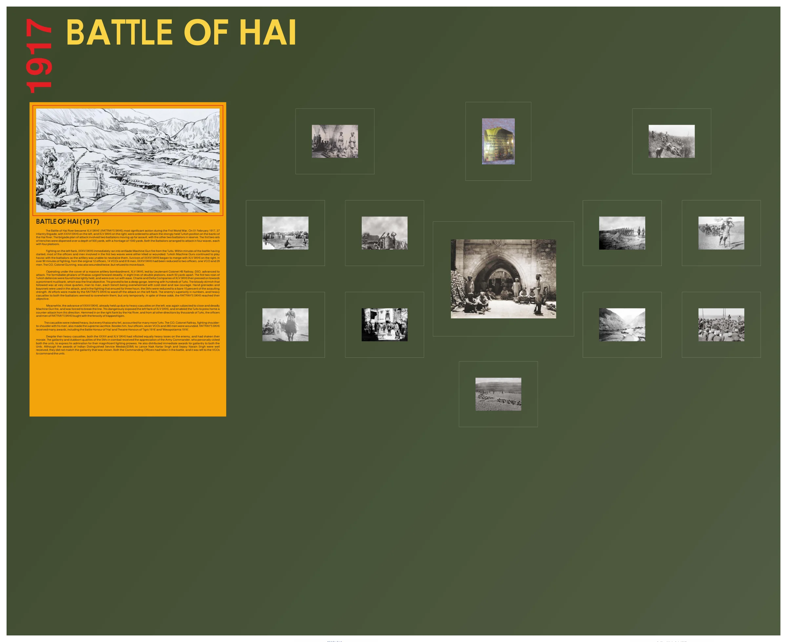
ਬੈਟਲ ਗੈਲਰੀ ਤਸਵੀਰਾਂ
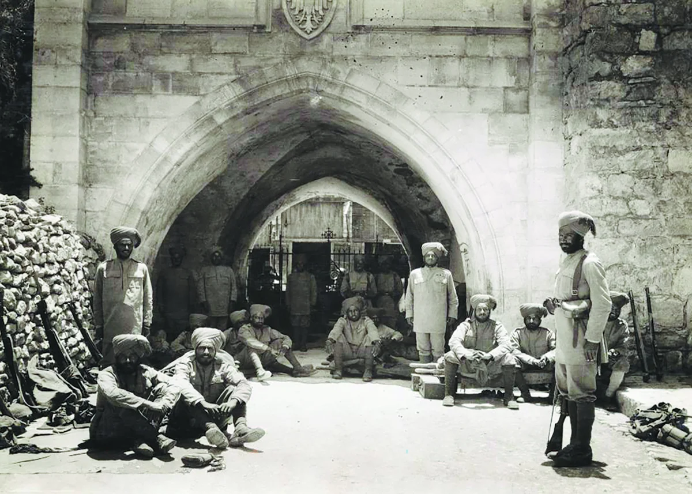
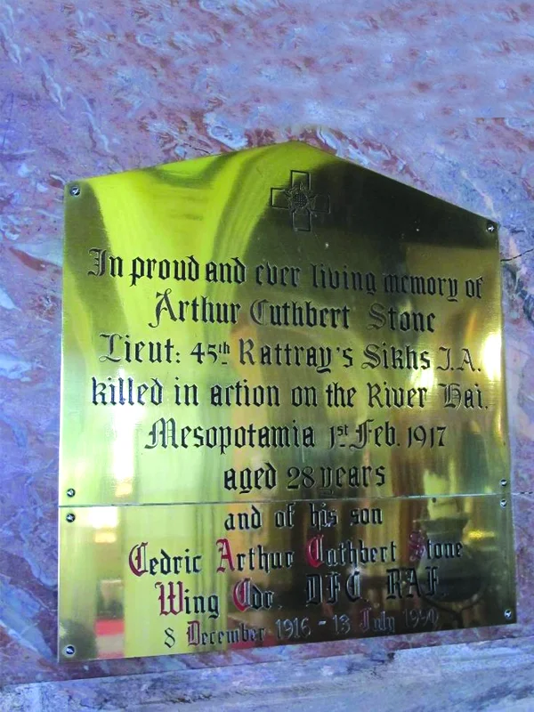
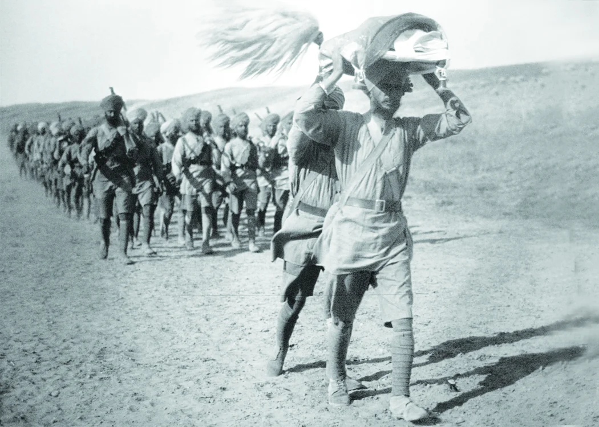
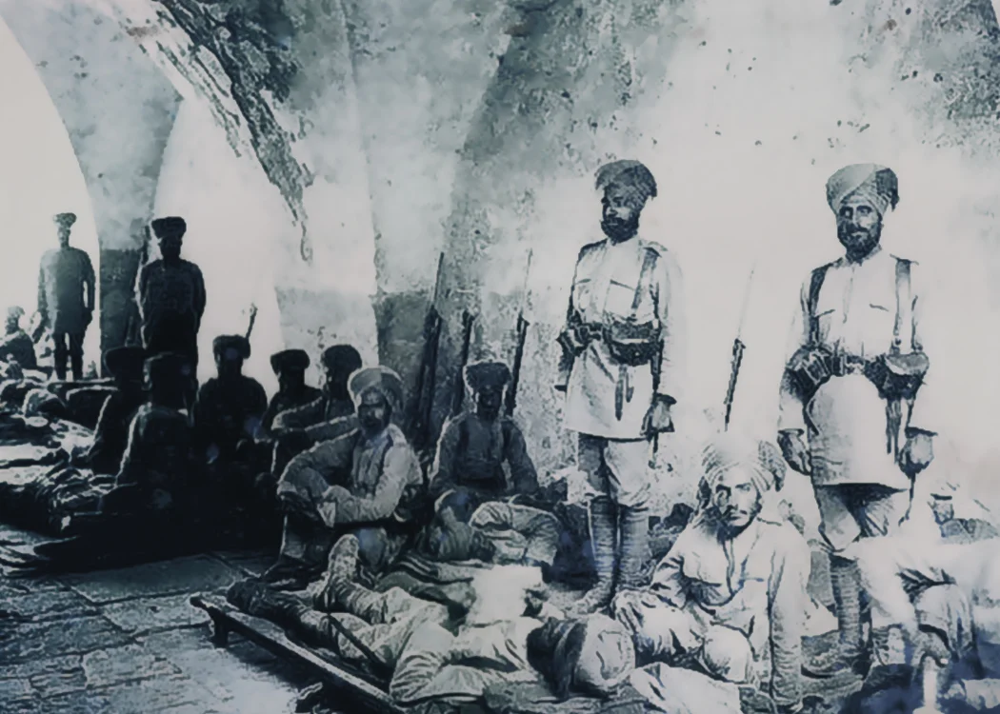
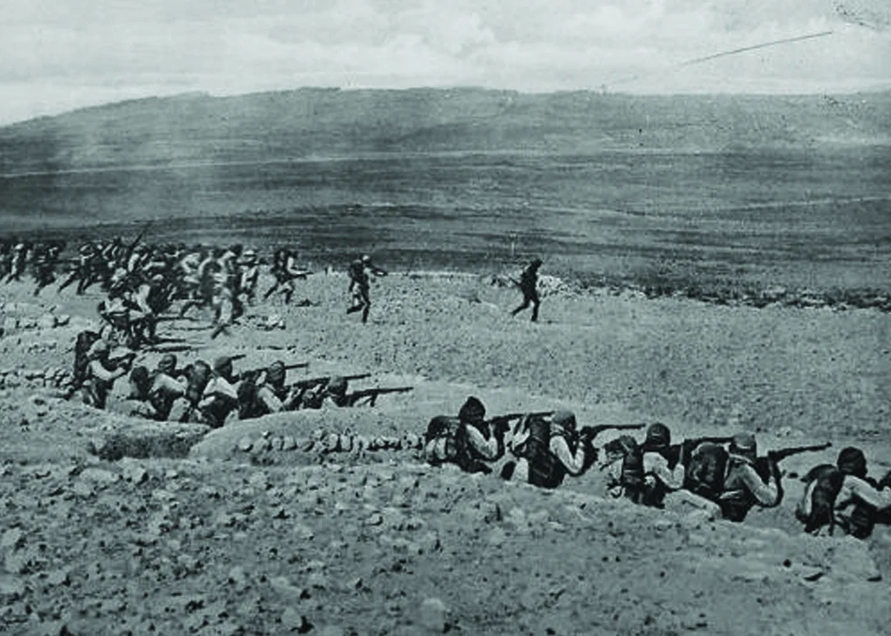
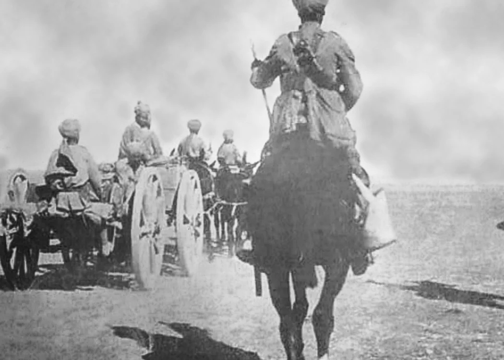
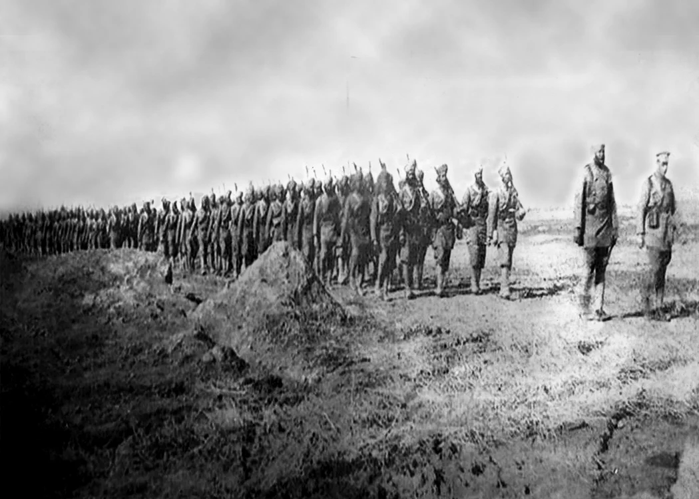
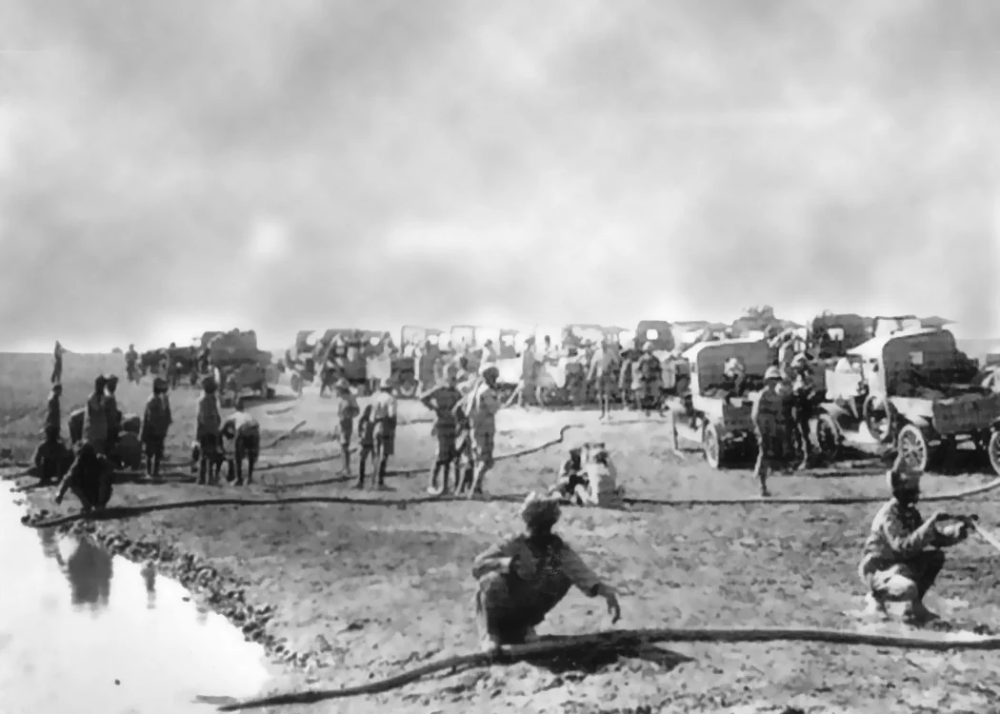
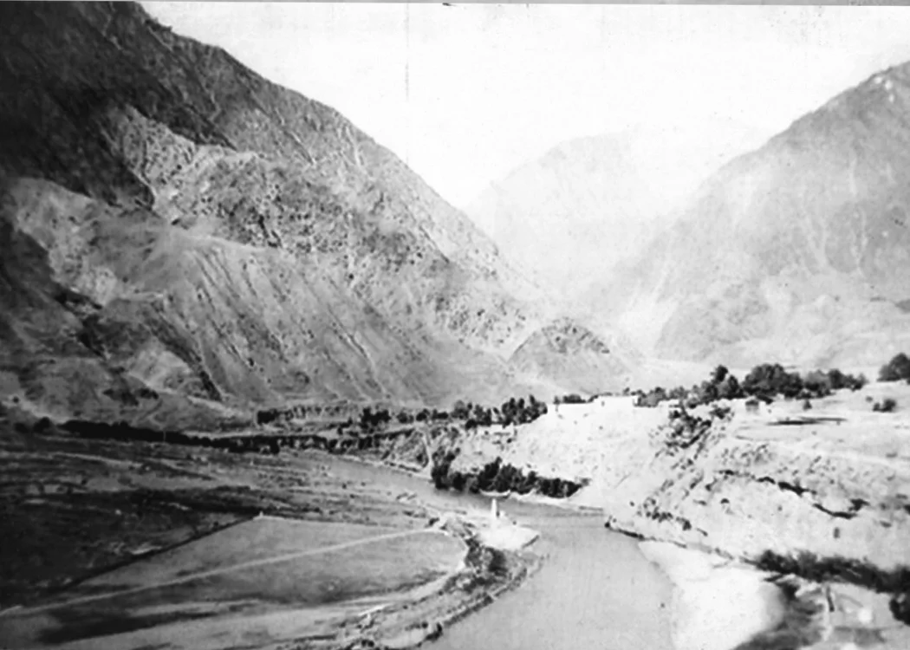
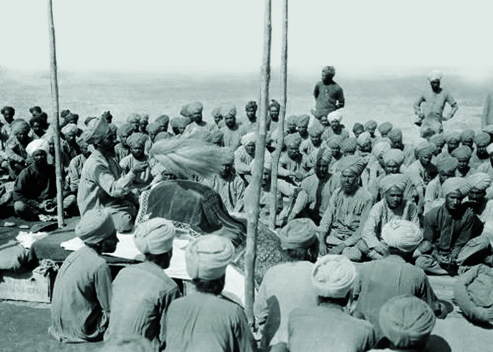
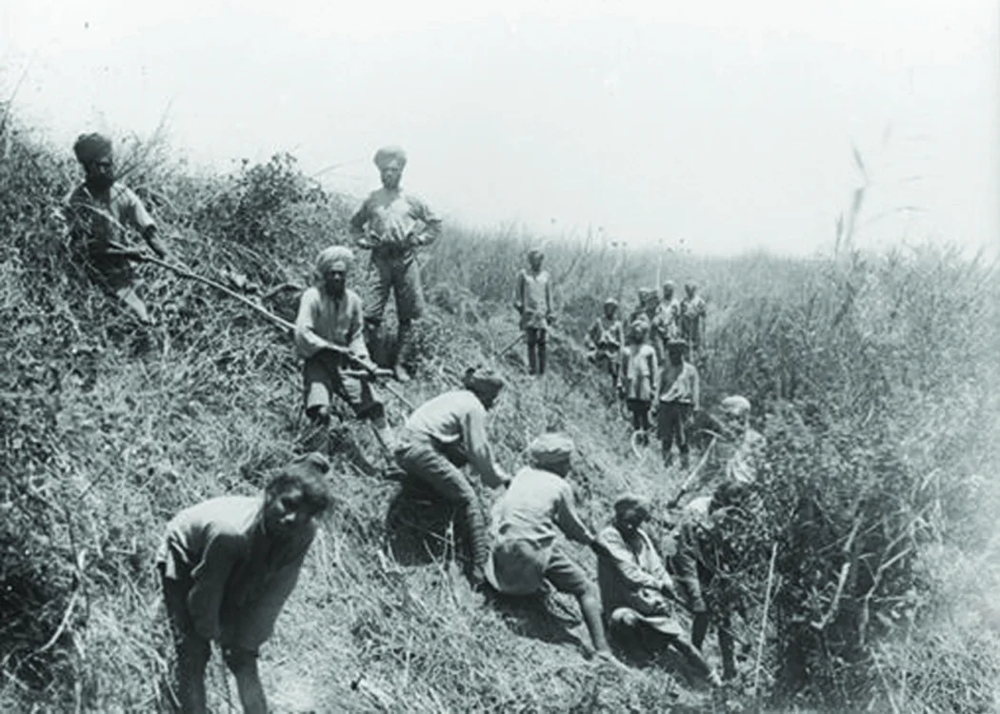
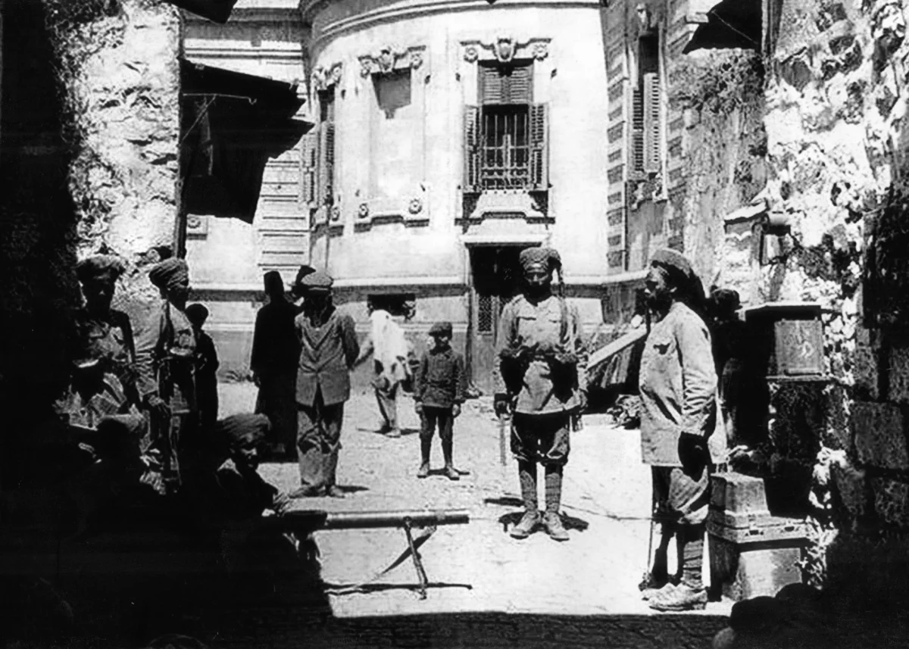
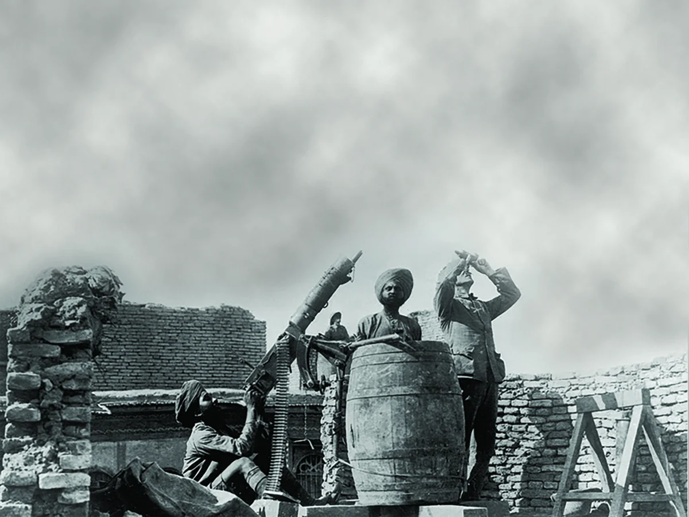
ਸ਼੍ਰੇਣੀ: ਬੈਟਲ ਗੈਲਰੀ
ਰੈਜੀਮੈਂਟ: ਸਿੱਖ ਰੈਜੀਮੈਂਟ
ਹੈ ਨਦੀ ਦੀ ਲੜਾਈ ਪਹਿਲੀ ਵਾਰ XLV ਸਿੱਖ (ਰੱਤਰੇ ਦੇ ਸਿੱਖ) ਦੀ ਸਭ ਤੋਂ ਮਹੱਤਵਪੂਰਨ ਕਾਰਵਾਈ ਬਣ ਗਈ। ਵਿਸ਼ਵ ਯੁੱਧ. 01 ਫਰਵਰੀ 1917 ਨੂੰ, 37ਵੀਂ ਇਨਫੈਂਟਰੀ ਬ੍ਰਿਗੇਡ, ਖੱਬੇ ਪਾਸੇ 36ਵੀਂ ਸਿੱਖ, ਅਤੇ XLV ਸਿੱਖ। ਸੱਜੇ ਪਾਸੇ, ਨੂੰ ਹੈਈ ਨਦੀ ਦੇ ਕੰਢੇ 'ਤੇ ਮਜ਼ਬੂਤੀ ਨਾਲ ਰੱਖੀ ਗਈ ਤੁਰਕੀ ਸਥਿਤੀ 'ਤੇ ਹਮਲਾ ਕਰਨ ਦਾ ਹੁਕਮ ਦਿੱਤਾ ਗਿਆ ਸੀ। ਦ ਹਮਲੇ ਦੀ ਬ੍ਰਿਗੇਡ ਯੋਜਨਾ ਵਿੱਚ ਦੋ ਬਟਾਲੀਅਨਾਂ ਹਮਲੇ ਲਈ ਅੱਗੇ ਵਧ ਰਹੀਆਂ ਸਨ, ਦੂਜੀਆਂ ਦੋ ਬਟਾਲੀਅਨਾਂ ਵਿੱਚ ਰਿਜ਼ਰਵ ਖਾਈ ਦੇ ਪਹਿਲੇ ਦੋ ਸੈੱਟ 500 ਗਜ਼ ਦੀ ਡੂੰਘਾਈ ਵਿੱਚ ਖਿੰਡੇ ਗਏ ਸਨ, 1000 ਗਜ਼. ਦੋਵੇਂ ਬਟਾਲੀਅਨਾਂ ਨੇ ਚਾਰ ਪਲਟਨਾਂ ਨਾਲ ਚਾਰ ਲਹਿਰਾਂ ਵਿੱਚ ਹਮਲਾ ਕਰਨ ਦਾ ਪ੍ਰਬੰਧ ਕੀਤਾ।
ਖੱਬੇ ਪਾਸੇ ਨਾਲ ਲੜਦੇ ਹੋਏ, 36ਵੀਂ ਸਿੱਖ ਤੁਰਕਾਂ ਵੱਲੋਂ ਤੁਰੰਤ ਮਸ਼ੀਨ ਗਨ ਫਾਇਰ ਵਿੱਚ ਭੱਜ ਗਏ। ਲੜਾਈ ਸ਼ੁਰੂ ਹੋਣ ਦੇ ਕੁਝ ਮਿੰਟਾਂ ਦੇ ਅੰਦਰ, ਬਹੁਤੇ ਅਧਿਕਾਰੀ ਅਤੇ ਆਦਮੀ ਪਹਿਲੇ ਦੋ ਵਿੱਚ ਸ਼ਾਮਲ ਹੋ ਗਏ ਲਹਿਰਾਂ ਜਾਂ ਤਾਂ ਮਾਰੇ ਗਏ ਜਾਂ ਜ਼ਖਮੀ ਹੋ ਗਏ। ਤੁਰਕੀ ਦੀਆਂ ਮਸ਼ੀਨ ਗੰਨਾਂ ਨੇ ਬਟਾਲੀਅਨਾਂ ਨਾਲ ਤਬਾਹੀ ਮਚਾਉਣੀ ਜਾਰੀ ਰੱਖੀ ਤੋਪਖਾਨਾ ਉਨ੍ਹਾਂ ਨੂੰ ਬੇਅਸਰ ਕਰਨ ਵਿੱਚ ਅਸਮਰੱਥ ਸੀ। 36ਵੀਂ ਸਿੱਖਾਂ ਦੇ ਬਚੇ ਹੋਏ ਲੋਕ XLV ਸਿੱਖਾਂ ਵਿੱਚ ਅਭੇਦ ਹੋਣ ਲੱਗੇ ਹੱਕ. 90 ਮਿੰਟਾਂ ਤੋਂ ਵੱਧ ਦੀ ਲੜਾਈ ਵਿੱਚ, ਅਸਲ 12 ਅਫਸਰਾਂ, 14 VCOs ਅਤੇ 618 ਆਦਮੀਆਂ ਤੋਂ, 36ਵੀਂ ਸਿੱਖਾਂ ਨੂੰ ਘਟਾ ਕੇ ਦੋ ਅਫਸਰ, ਇੱਕ ਵੀਸੀਓ ਅਤੇ 29 ਆਦਮੀ ਕਰ ਦਿੱਤਾ ਗਿਆ ਸੀ। ਸੀਓ, ਕਰਨਲ ਗਨਿੰਗ ਵੀ ਜ਼ਖਮੀ ਹੋ ਗਿਆ ਦੋ ਵਾਰ, ਪਰ ਵਾਪਸ ਜਾਣ ਤੋਂ ਇਨਕਾਰ ਕਰ ਦਿੱਤਾ।
ਲੈਫਟੀਨੈਂਟ ਕਰਨਲ ਐਚ.ਬੀ. ਦੀ ਅਗਵਾਈ ਵਿੱਚ ਇੱਕ ਵਿਸ਼ਾਲ ਤੋਪਖਾਨੇ ਦੀ ਬੰਬਾਰੀ ਦੀ ਕਵਰੇਜ ਹੇਠ ਕੰਮ ਕਰਦੇ ਹੋਏ, XLV ਸਿੱਖ ਰੱਤਰੇ, ਡੀ.ਐਸ.ਓ., ਹਮਲਾ ਕਰਨ ਲਈ ਅੱਗੇ ਵਧਿਆ। ਖਾਲਸੇ ਦਾ ਜ਼ਬਰਦਸਤ ਫਲੈਂਕਸ ਅੱਠਾਂ ਵਿੱਚ, ਲਗਾਤਾਰ ਅੱਗੇ ਵਧਿਆ। ਡਬਲ ਪਲਟੂਨਾਂ ਦੀਆਂ ਲਾਈਨਾਂ, ਹਰੇਕ 50 ਗਜ਼ ਦੀ ਦੂਰੀ 'ਤੇ। ਤੁਰਕੀ ਦੀ ਰੱਖਿਆ ਦੀਆਂ ਪਹਿਲੀਆਂ ਦੋ ਕਤਾਰਾਂ ਪਾਈਆਂ ਗਈਆਂ ਸਨ ਹਲਕੇ ਤੌਰ 'ਤੇ ਰੱਖੇ ਗਏ, ਅਤੇ ਆਸਾਨੀ ਨਾਲ ਕਾਬੂ ਕੀਤੇ ਗਏ। XLV ਸਿੱਖ ਦੀਆਂ ਚਾਰਲੀ ਅਤੇ ਡੈਲਟਾ ਕੰਪਨੀਆਂ ਨੇ ਫਿਰ ਦਬਾ ਦਿੱਤਾ ਇੱਕ ਪ੍ਰਮੁੱਖ ਚਿੱਕੜ ਬੈਂਕ ਵੱਲ, ਜੋ ਅੰਤਮ ਉਦੇਸ਼ ਸੀ। ਇਹ ਡੂੰਘੀ ਖੱਡ ਸਾਬਤ ਹੋਈ ਸੈਂਕੜੇ ਤੁਰਕਾਂ ਦੇ ਨਾਲ। ਇਸ ਤੋਂ ਬਾਅਦ ਹੋਈ ਖੂਨੀ ਝੜਪ ਬਹੁਤ ਹੀ ਨੇੜੇ ਸੀ, ਆਦਮੀ ਤੋਂ ਆਦਮੀ, ਹਰੇਕ ਖਾਈ ਠੰਡੇ ਸਟੀਲ ਅਤੇ ਕੱਚੀ ਹਿੰਮਤ ਨਾਲ ਹਾਵੀ ਹੋ ਰਹੀ ਹੈ. ਵਿੱਚ ਹੈਂਡ ਗਰਨੇਡ ਅਤੇ ਬੇਯੋਨੇਟਸ ਦੀ ਵਰਤੋਂ ਕੀਤੀ ਗਈ ਸੀ ਹਮਲਾ, ਅਤੇ ਤਿੰਨ ਘੰਟੇ ਤੱਕ ਚੱਲੀ ਲੜਾਈ ਵਿੱਚ, ਸਿੱਖ ਸਿਰਫ 15 ਪ੍ਰਤੀਸ਼ਤ ਤੱਕ ਘੱਟ ਗਏ। ਹਮਲਾ ਕਰਨ ਦੀ ਤਾਕਤ. ਰੱਤਰੇ ਦੇ ਸਿੱਖਾਂ ਵੱਲੋਂ ਖੱਬੇ ਪੱਖੀ ਹਮਲੇ ਤੋਂ ਬਚਣ ਲਈ ਸਾਰੇ ਯਤਨ ਕੀਤੇ ਗਏ flank
ਦੁਸ਼ਮਣ ਦੀ ਗਿਣਤੀ ਵਿਚ ਉੱਤਮਤਾ, ਅਤੇ ਦੋਵਾਂ ਬਟਾਲੀਅਨਾਂ ਦਾ ਭਾਰੀ ਜਾਨੀ ਨੁਕਸਾਨ ਉਨ੍ਹਾਂ ਨੂੰ ਹਾਵੀ ਜਾਪਦਾ ਸੀ, ਪਰ ਸਿਰਫ ਅਸਥਾਈ ਤੌਰ 'ਤੇ. ਇਨ੍ਹਾਂ ਔਕੜਾਂ ਦੇ ਬਾਵਜੂਦ, ਰੱਤਰੇ ਦੇ ਸਿੱਖ ਆਪਣੇ ਉਦੇਸ਼ 'ਤੇ ਪਹੁੰਚ ਗਏ। ਇਸ ਦੌਰਾਨ ਸ. ਖੱਬੇ ਪਾਸੇ ਭਾਰੀ ਜਾਨੀ ਨੁਕਸਾਨ ਦੇ ਕਾਰਨ ਪਹਿਲਾਂ ਹੀ ਰੋਕੀ ਹੋਈ 36ਵੀਂ ਸਿੱਖਾਂ ਦੀ ਅਗਾਊਂ ਕਾਰਵਾਈ ਨੂੰ ਫਿਰ ਤੋਂ ਪ੍ਰਭਾਵਿਤ ਕੀਤਾ ਗਿਆ। ਨੇੜੇ ਅਤੇ ਘਾਤਕ ਮਸ਼ੀਨ ਗਨ ਫਾਇਰ, ਅਤੇ ਲਾਈਨ ਨੂੰ ਤੋੜਨ ਲਈ ਮਜਬੂਰ ਕੀਤਾ ਗਿਆ। ਇਸ ਨੇ ਖ਼ਤਰਨਾਕ ਤੌਰ 'ਤੇ ਖੱਬੀ ਧਿਰ ਦਾ ਪਰਦਾਫਾਸ਼ ਕੀਤਾ XLV ਸਿਖਾਂ ਦੀ ਝੋਲੀ, ਅਤੇ ਤੁਰਕਾਂ ਨੂੰ ਇਸ ਦਿਸ਼ਾ ਤੋਂ ਜਵਾਬੀ ਹਮਲਾ ਕਰਨ ਦੇ ਯੋਗ ਬਣਾਇਆ। ਵਿੱਚ ਹੈਮਡ ਹਾਇ ਨਦੀ ਦੇ ਸੱਜੇ ਪਾਸੇ, ਅਤੇ ਹੋਰ ਸਾਰੀਆਂ ਦਿਸ਼ਾਵਾਂ ਤੋਂ ਹਜ਼ਾਰਾਂ ਤੁਰਕ, ਅਫਸਰਾਂ ਦੁਆਰਾ ਅਤੇ ਰੱਤਰੇ ਦੇ ਸਿੱਖਾਂ ਦੇ ਬੰਦੇ ਫਸੇ ਹੋਏ ਬਾਘਾਂ ਦੀ ਬੇਰਹਿਮੀ ਨਾਲ ਲੜੇ। ਜਾਨੀ ਨੁਕਸਾਨ ਸੱਚਮੁੱਚ ਭਾਰੀ ਸੀ, ਪਰ ਹਰ ਖਾਲਸੇ ਨੇ ਜੋ ਡਿੱਗਿਆ, ਬਹੁਤ ਸਾਰੇ ਤੁਰਕਾਂ ਦਾ ਲੇਖਾ-ਜੋਖਾ ਕੀਤਾ। ਸੀਓ, ਕਰਨਲ ਰੱਤਰੇ, ਲੜ ਰਹੇ ਹਨ ਆਪਣੇ ਬੰਦਿਆਂ ਦੇ ਨਾਲ ਮੋਢੇ ਨਾਲ ਮੋਢਾ ਜੋੜ ਕੇ, ਮਹਾਨ ਕੁਰਬਾਨੀ ਵੀ ਦਿੱਤੀ। ਉਸ ਤੋਂ ਇਲਾਵਾ ਚਾਰ ਅਧਿਕਾਰੀ ਸੱਤ ਵੀਸੀਓ ਅਤੇ 280 ਆਦਮੀ ਜ਼ਖਮੀ ਹੋ ਗਏ।
ਰੱਤਰੇ ਦੇ ਸਿੱਖਾਂ ਨੂੰ 'ਹੈ' ਦਾ ਬੈਟਲ ਆਨਰ ਅਤੇ 'ਟਾਈਗਰਿਸ' ਦੇ ਥੀਏਟਰ ਆਨਰ ਸਮੇਤ ਕਈ ਪੁਰਸਕਾਰ ਮਿਲੇ ਹਨ। 1916' ਅਤੇ 'ਮੇਸੋਪੋਟੇਮੀਆ 1916'। ਉਹਨਾਂ ਦੇ ਭਾਰੀ ਜਾਨੀ ਨੁਕਸਾਨ ਦੇ ਬਾਵਜੂਦ, 36ਵੀਂ ਅਤੇ XLV ਸਿੱਖਾਂ ਨੇ ਨੁਕਸਾਨ ਪਹੁੰਚਾਇਆ ਸੀ ਦੁਸ਼ਮਣ 'ਤੇ ਬਰਾਬਰ ਭਾਰੀ ਨੁਕਸਾਨ, ਅਤੇ ਉਨ੍ਹਾਂ ਦੇ ਮਨੋਬਲ ਨੂੰ ਹਿਲਾ ਦਿੱਤਾ ਸੀ। ਦੀ ਬਹਾਦਰੀ ਅਤੇ ਜ਼ਿੱਦੀ ਗੁਣ ਲੜਾਈ ਵਿਚ ਸ਼ਾਮਲ ਸਿੱਖਾਂ ਨੇ ਫੌਜ ਦੇ ਕਮਾਂਡਰ ਦੀ ਪ੍ਰਸ਼ੰਸਾ ਕੀਤੀ, ਜਿਸ ਨੇ ਨਿੱਜੀ ਤੌਰ 'ਤੇ ਦੋਵਾਂ ਦਾ ਦੌਰਾ ਕੀਤਾ ਯੂਨਿਟਾਂ, ਉਨ੍ਹਾਂ ਦੀ ਸ਼ਾਨਦਾਰ ਲੜਾਈ ਦੀ ਸ਼ਕਤੀ ਲਈ ਉਸਦੀ ਪ੍ਰਸ਼ੰਸਾ ਪ੍ਰਗਟ ਕਰਨ ਲਈ। ਉਨ੍ਹਾਂ ਨੇ ਤੁਰੰਤ ਵੰਡ ਵੀ ਦਿੱਤੀ ਦੋਵਾਂ ਯੂਨਿਟਾਂ ਨੂੰ ਬਹਾਦਰੀ ਲਈ ਪੁਰਸਕਾਰ। ਹਾਲਾਂਕਿ ਭਾਰਤੀ ਵਿਸ਼ੇਸ਼ ਸੇਵਾ ਮੈਡਲਾਂ ਦੇ ਪੁਰਸਕਾਰ (IDSM) ਨੂੰ ਲਾਂਸ ਨਾਇਕ ਕਰਤਾਰ ਸਿੰਘ ਅਤੇ ਸਿਪਾਹੀ ਨਰਾਇਣ ਸਿੰਘ ਨੂੰ ਚੰਗੀ ਤਰ੍ਹਾਂ ਪ੍ਰਾਪਤ ਕੀਤਾ ਗਿਆ, ਉਹ ਮੇਲ ਨਹੀਂ ਖਾਂਦੇ। ਬਹਾਦਰੀ ਜੋ ਦਿਖਾਈ ਗਈ ਸੀ। ਦੋਵੇਂ ਕਮਾਂਡਿੰਗ ਅਫਸਰ ਲੜਾਈ ਵਿਚ ਡਿੱਗ ਗਏ ਸਨ, ਅਤੇ ਇਹ ਛੱਡ ਦਿੱਤਾ ਗਿਆ ਸੀ ਯੂਨਿਟਾਂ ਦੀ ਕਮਾਂਡ ਕਰਨ ਲਈ ਵੀ.ਸੀ.ਓ.

ਮੋਬਾਈਲ 'ਤੇ ਖੋਲ੍ਹੋ
ਆਪਣੇ ਫ਼ੋਨ 'ਤੇ ਅੰਗਰੇਜ਼ੀ, ਹਿੰਦੀ ਜਾਂ ਪੰਜਾਬੀ ਵਿੱਚ ਦੇਖਣ ਲਈ ਇਸ QR ਕੋਡ ਨੂੰ ਸਕੈਨ ਕਰੋ।